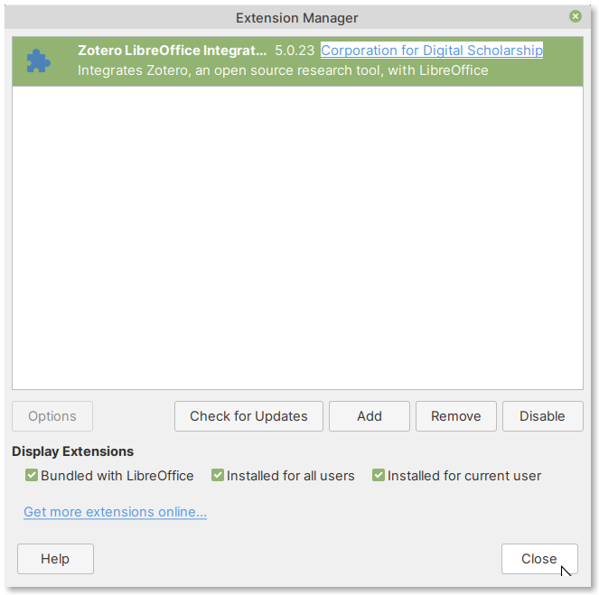

6.1.3. Integrating Zotero in LibreOffice¶
To be able to insert citations and bibliography in your documents, you will need to install the Word Processor Add-in.
Installing Word Processor add-in¶
To install the add-in in LibreOffice:
From the main menu bar of Zotero, select
(Fig. 100).
Fig. 100 Viewing Zotero preferences¶
In the Zotero Preferences dialog window that opens, click on the Cite tab.
Now, click on the Word Processors tab to select it.
Click on the Install LibreOffice Add-in button (Fig. 101).
Fig. 101 Installing LibreOffice Add-in from Zotero preferences¶
The Zotero LibreOffice Plugin Installation wizard will now open (Fig. 102)
Fig. 102 Zotero LibreOffice Plugin Installation wizard¶
Click on the Next button to proceed.
Click on Manual Installation in the select LibreOffice installations dialog window (Fig. 103).
Fig. 103 Click on the Manual Installation button¶
A file browser window will open, with the directory set to the location of the add-in file — Zotero_OpenOffice_Integration.oxt (Fig. 104).
Fig. 104 File browser open with location of the Add-in file¶
Double-click on Zotero_OpenOffice_Integration.oxt.
This will open LibreOffice Extension Manager, with a prompt requesting if you would like to install the add-in.
Click on the OK button to confirm (Fig. 105).
Fig. 105 Click on the OK button in LibreOffice Extension Manager¶
The add-in will now be installed (Fig. 106).
 Fig. 106 Zotero LibreOffice Add-in installed successfully¶
If you restart LibreOffice, you will notice the Zotero toolbar in the main window (Fig. 107).
Fig. 107 Zotero toolbar in LibreOffice¶
—
You can now start inserting citations and bibliographies in your documents.